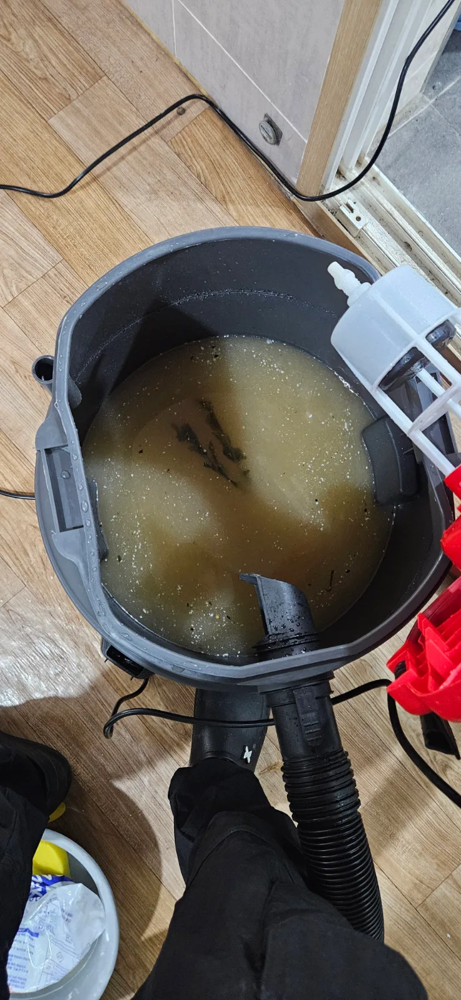
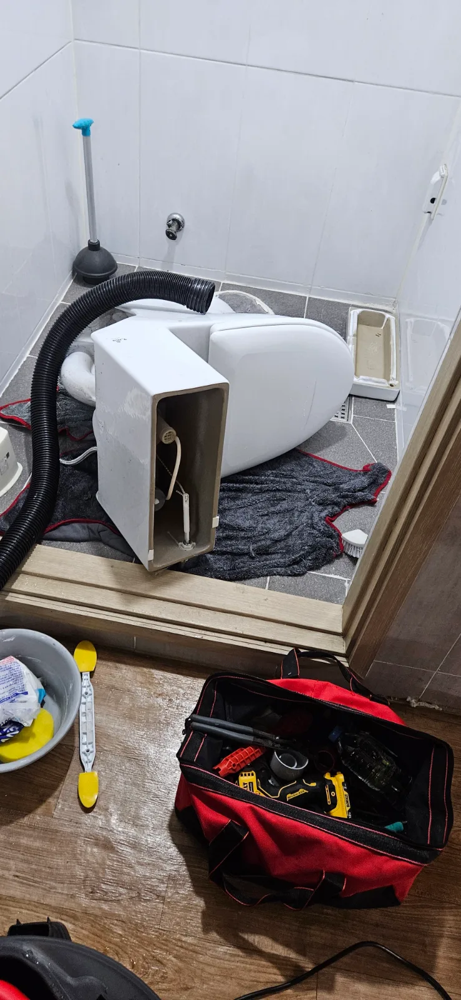

용인시 처인구 원삼면 목신리 변기막힘, 현장 도착 후 진단
경기도 용인시 처인구 원삼면 목신리에서 변기막힘을 처리한 현장입니다. 변기에 남아 있는 오수를 석션으로 먼저 빼낸 뒤 변기를 탈거했습니다. 이후 변기를 뒤집어 추가 석션을 진행하고 에어건 작업까지 이어갔으며, 마지막 물내림 테스트에서 물이 시원하게 내려가는 상태를 확인했습니다.
정확히 어떤 이물질이 막힘을 시작하게 했는지는 확인되지 않았습니다. 따라서 이번 변기막힘의 원인을 물티슈나 특정 물건으로 단정하지 않고, 실제 작업에서 확인한 내용과 통수 결과를 중심으로 설명드립니다. 오수를 회수한 모습만으로 막힘을 유발한 물질이나 쌓인 기간을 판단하지 않았습니다.
변기가 막혔을 때 물이 고여 있는 상태에서 계속 물을 내리면 오수가 더 차오를 수 있습니다. 이번 현장은 남아 있는 오수를 먼저 제거해 후속 작업을 준비하는 순서로 접근했습니다. 원삼면 목신리 변기막힘은 석션으로 고인 물을 빼는 과정에서 끝내지 않고, 탈거 후 변기 내부 통로를 작업하고 실제 배수까지 확인한 사례입니다.
1단계: 증상 확인과 필요한 장비 작업
첫 단계는 석션으로 변기에 남은 오수를 회수하는 작업이었습니다. 오수를 빼는 것은 변기를 분리하고 방향을 바꾸는 후속 작업을 준비하는 과정이기도 합니다. 고인 물을 제거했다고 해서 내부의 막힌 통로까지 열렸다고 판단할 수는 없으므로, 오수 회수와 막힘 해소는 각각 확인해야 합니다.
용인시 처인구 변기막힘 현장에서는 오수를 제거한 뒤 변기를 탈거했습니다. 설치된 상태에서는 접근하기 어려운 하부 방향을 살펴보고 작업할 수 있도록 변기를 뒤집었습니다. 사진에는 바닥에 보양재를 깔고 분리한 변기를 눕힌 상태와 석션 호스가 함께 보입니다. 도기와 바닥이 직접 부딪히지 않도록 작업 공간을 마련한 모습입니다.
이번 변기막힘에서 탈거는 내부 통로에 다른 방향으로 접근하기 위한 단계였습니다. 변기의 물길은 굽어 있어 위쪽 입구에서만 작업할 때와 분리해 방향을 바꿨을 때 접근 조건이 다릅니다. 모든 막힘에 탈거가 필요한 것은 아니지만, 이 현장에서는 오수를 빼낸 뒤 변기를 분리하고 추가 석션과 에어건 작업을 진행하는 방식으로 처리했습니다.

2단계: 원인 구간 처리와 정상 작동 확인
탈거한 변기를 뒤집은 상태에서 석션 작업을 더 진행했습니다. 처음 석션이 고인 오수를 빼내는 과정이었다면, 이후 작업은 방향을 바꾼 변기 내부 통로에 접근해 막힘을 처리하는 과정이었습니다. 추가 흡입 작업을 마친 뒤 다음 작업으로 이어갔습니다.
추가 석션에 이어 에어건을 사용했습니다. 이번 변기막힘은 흡입 작업과 압축공기를 이용하는 작업을 함께 진행한 사례입니다. 두 장비의 작용 방식이 다르기 때문에, 단순히 장비 이름을 나열하는 것보다 어느 단계에서 어떤 목적으로 사용했는지가 중요합니다. 현장에서는 탈거한 상태에서 석션을 더 하고 에어건 작업까지 마친 뒤 통수 여부를 확인했습니다.
원삼면 목신리 변기막힘의 결과는 작업 도중 내용물이 나왔다는 사실만으로 판단하지 않았습니다. 내부 작업을 마친 후 변기의 물을 내려 배수 흐름을 확인했습니다. 첨부된 영상은 이 통수테스트 장면이며, 물이 시원하게 내려가는 모습을 보여줍니다. 오수를 회수한 사진과 탈거 상태의 사진은 작업 과정을, 영상은 물내림 결과를 각각 확인할 수 있는 자료입니다.

작업 결과와 재발 방지 안내
용인시 처인구 원삼면 목신리 변기막힘은 오수 석션, 변기 탈거, 뒤집은 상태에서의 추가 석션, 에어건 작업을 거쳐 통수를 회복했습니다. 마지막에는 실제로 물을 내려 배수가 이루어지는 것을 확인했습니다. 변기 내부의 정확한 막힘 유발 물건을 특정하지는 못했지만, 오수를 회수하고 내부 작업을 진행한 과정과 작업 후 물 흐름은 확인한 내용입니다.
변기막힘을 예방하려면 휴지를 한 번에 많이 넣지 않도록 하고, 물에 잘 풀리지 않는 물티슈나 위생용품은 별도로 버리는 것이 좋습니다. 이는 평소 관리 방법이며 이번 현장에서 물티슈가 원인이었다는 뜻은 아닙니다. 다시 배수가 느려지거나 물이 차오르는 현상이 생기면 반복해서 물을 내리기보다 사용을 멈추고 상태를 확인하는 편이 좋습니다.
변기 뚫는 업체에 상담할 때는 물이 어느 정도 남는지, 물을 내렸을 때 수위가 올라가는지, 이미 어떤 조치를 했는지를 알려주시면 도움이 됩니다. 눈에 보이는 물 고임과 실제로 막힌 위치가 항상 같지는 않으므로, 증상만 듣고 특정 물건이나 작업 방식을 미리 확정하기보다 현장 상태에 맞춰 판단해야 합니다.
신라건축설비는 이번 목신리 현장에서 고인 오수 처리부터 탈거 후 내부 작업, 마지막 물내림 확인까지 순서대로 진행했습니다. 작업 전의 배수 불편이 개선됐는지를 실제 사용 방식으로 확인하는 데 중점을 두었으며, 통수테스트 영상으로 마무리 상태를 남겼습니다.
최종 조치: 변기막힘을 탈거 후 추가 석션과 에어건으로 처리하고 물내림 테스트에서 통수 회복 확인
현장 영상
현장 방문 전 확인하는 비용과 작업 범위
신라건축설비는 현장 증상과 배관 구조를 확인한 뒤 필요한 작업과 예상 비용을 안내합니다. 단순 관통으로 해결되는지, 배관내시경·석션·고압세척 또는 변기 탈거가 필요한지는 현장 상태에 따라 달라집니다. 출장비와 야간 작업비, 추가 장비 비용이 발생할 수 있는 경우 작업 전에 먼저 설명하고 동의를 받은 범위에서 진행합니다.
업체를 선택할 때 확인할 사항
무조건적인 ‘0원’ 표현보다 실제 작업 범위, 추가 비용 조건, 사용 장비와 사후 대응 기준을 확인하는 것이 중요합니다. 해결되지 않았을 때의 비용 기준과 작업 후 동일 증상 발생 시 점검 범위를 사전에 문의해두면 불필요한 분쟁을 줄일 수 있습니다.
용인시 처인구 변기막힘 자주 묻는 질문
변기막힘은 왜 반복되나요?
용인시 처인구 원삼면 목신리 현장처럼 변기 배수가 막혀 오수가 남아 있는 상태 증상은 원인이 현장마다 다를 수 있습니다. 변기 내부 이물질뿐 아니라 하부 오수관 막힘이나 배관 상태 때문에 반복될 수 있습니다. 같은 변기막힘이 재발하면 막힌 위치와 원인을 다시 확인하는 것이 중요합니다.
변기 물이 안 내려가거나 역류하면 변기뚫는업체를 불러야 하나요?
물이 천천히 내려가거나 수위가 차오르고 변기역류가 반복되면 단순 뚫어뻥보다 전문 장비 점검이 필요한 경우가 있습니다. 현장에서는 증상과 배관 구조를 먼저 확인합니다.
변기 이물질 막힘은 변기를 탈거해야 하나요?
물티슈·청소포·플라스틱·음식물처럼 변기 트랩에 걸린 이물질은 위치에 따라 변기 탈거가 필요할 수 있습니다. 무조건 탈거하지 않고 먼저 막힘 위치를 판단합니다.
변기뚫는업체는 어떤 장비로 작업하나요?
현장 상태에 따라 석션, 에어건, 배관내시경, 변기 탈거 등을 사용합니다. 하부 오수관 문제라면 변기만 뚫는 작업보다 배관 구간 확인이 중요합니다.
변기막힘 비용은 어떻게 정해지나요?
단순 관통인지, 이물질 제거와 변기 탈거가 필요한지, 오수관이나 공용배관 작업이 필요한지에 따라 달라집니다. 추가 장비나 작업이 필요하면 진행 전에 범위와 비용을 안내합니다.
변기에서 냄새가 나거나 물이 자주 차오르는 것도 막힘과 관련 있나요?
악취나 수위 이상이 항상 막힘 때문인 것은 아니지만 배수 불량, 오수관 상태, 연결부 문제와 함께 나타날 수 있습니다. 반복되면 현장 점검으로 원인을 구분해야 합니다.
변기막힘 서울·경기 출동지역
신라건축설비는 용인시 처인구 원삼면 목신리 현장을 포함해 서울 25개 구와 경기도 31개 시·군의 배관 문제를 상담합니다. 현장 거리와 기사 배정 상황에 따라 출동 가능 여부를 먼저 안내드립니다.
서울 전 지역
강남구 · 강동구 · 강북구 · 강서구 · 관악구 · 광진구 · 구로구 · 금천구 · 노원구 · 도봉구 · 동대문구 · 동작구 · 마포구 · 서대문구 · 서초구 · 성동구 · 성북구 · 송파구 · 양천구 · 영등포구 · 용산구 · 은평구 · 종로구 · 중구 · 중랑구
경기도 주요 출동지역
수원시 · 용인시 · 고양시 · 화성시 · 성남시 · 부천시 · 남양주시 · 안산시 · 평택시 · 안양시 · 시흥시 · 파주시 · 김포시 · 의정부시 · 광주시 · 하남시 · 광명시 · 군포시 · 양주시 · 오산시 · 이천시 · 안성시 · 구리시 · 의왕시 · 포천시 · 양평군 · 여주시 · 동두천시 · 과천시 · 가평군 · 연천군